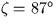

Air mass at given zenith distance (double precision).
CALL:
D = sla_AIRMAS (ZD)
GIVEN:
ZD
D
observed zenith distance (radians)
RETURNED:
sla_AIRMAS
D
air mass (1 at zenith)
NOTES:
1.
The observed zenith distance referred to above means
``as affected by refraction''.
2.
The routine uses Hardie's (1962) polynomial fit to Bemporad's
data for the relative air mass, X, in units of thickness at the
zenith as tabulated by Schoenberg (1929). This is adequate for all
normal needs as it is accurate to better than
0.1% up to X = 6.8 and better than 1% up to X = 10.
Bemporad's tabulated values are unlikely to be trustworthy
to such accuracy
because of variations in density, pressure and other
conditions in the atmosphere from those assumed in his work.
3.
The sign of the ZD is ignored.
4.
At zenith distances greater than about  the
air mass is held constant to avoid arithmetic overflows.
REFERENCES:
1.
Hardie, R.H., 1962, in Astronomical Techniques
ed. W.A. Hiltner, University of Chicago Press, p180.
2.
Schoenberg, E., 1929, Hdb. d. Ap.,
Berlin, Julius Springer, 2, 268.